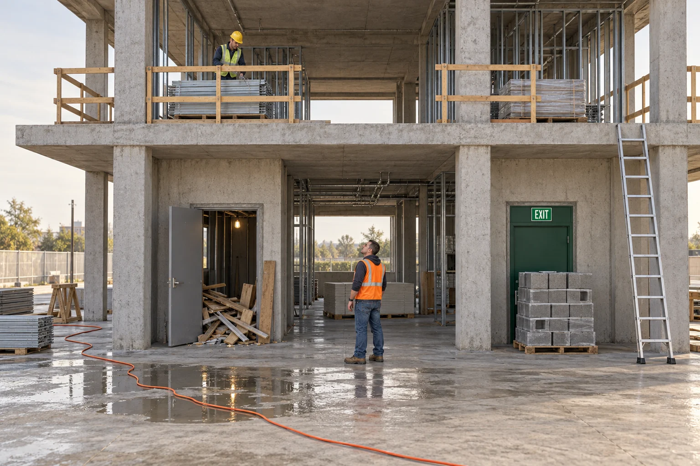
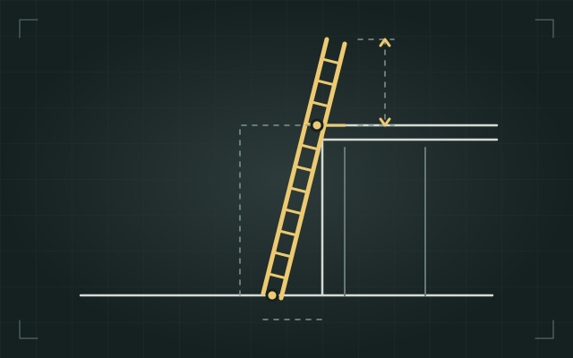
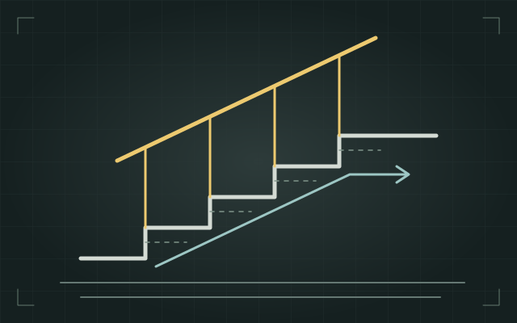
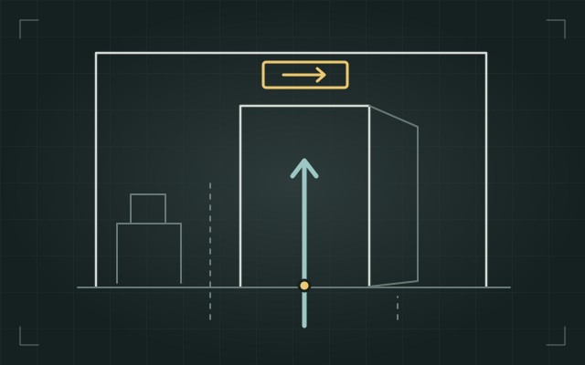
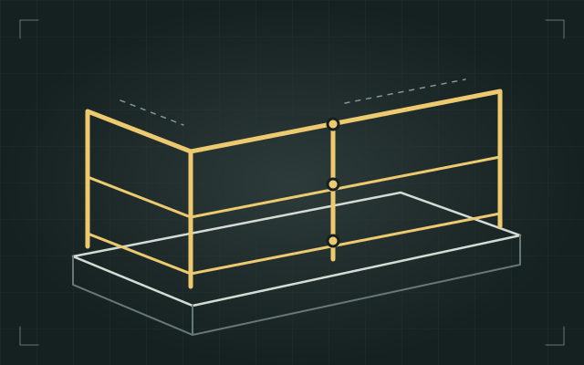
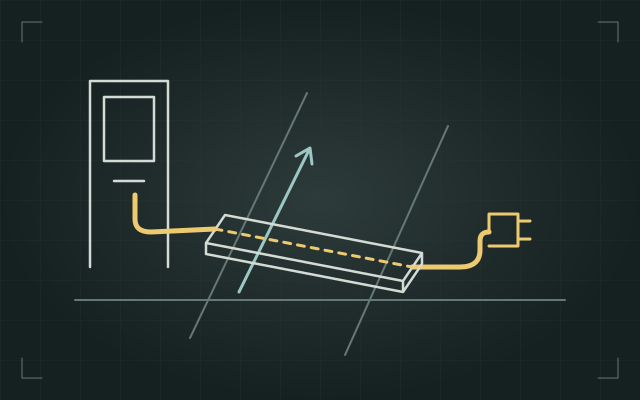
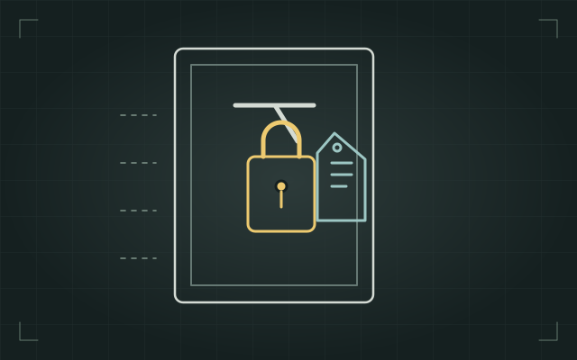
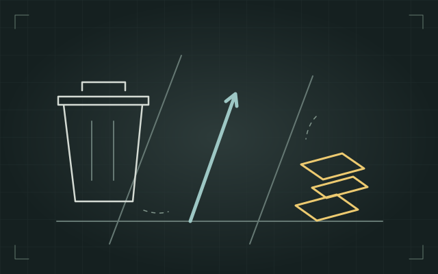
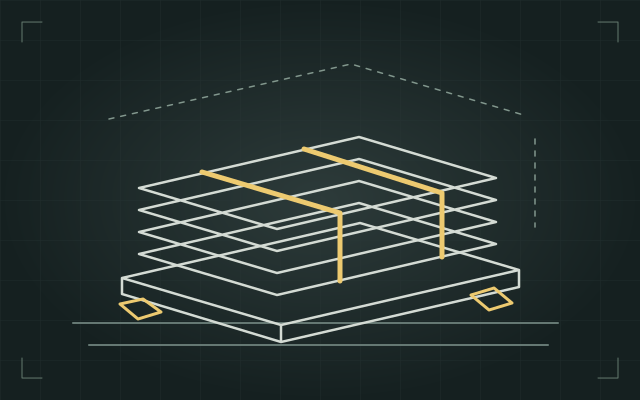
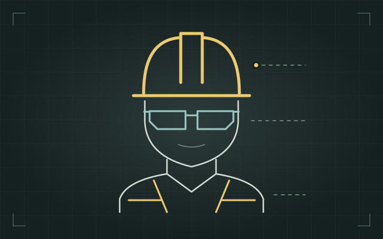

The site walk-through
Spot it before it hurts someone.
You will walk a jobsite on a fixed route, name what you find, and pick the control that will actually hold.

What you will be able to do
- Name the four zones of a walk-through, in order.
- Identify six common hazards in a site scene.
- Choose the strongest control a situation allows.
- Decide whether work continues or stops.
- Build a walk-through card you can carry.
Why this matters
Most people can point at a hazard once it is pointed out to them. The hard part is seeing it on the fourteenth morning, in the same doorway you have walked past thirteen times. That is what a method is for.
How this works
Ten screens, about nine minutes. Nothing is timed. Optional audio introductions include transcripts. Tab moves between controls; Enter or Space chooses. Arrow keys move between tabs. The hazard hunt also has a keyboard-accessible inspection list.
Who this is for
Anyone who walks a site and can call a stop: foremen, supervisors, safety leads, and the trades working alongside them.
This is a teaching demonstration. It is not a substitute for a site-specific safety program, a competent person on site, or the training your project actually requires.
The walk-through method
Walk the same four zones in the same order, every time. A route beats a wander, because a wander only finds what is already bothering you.
-
Access and egress.
How people get in, how they move, and how they would get out in a hurry. Gates, stairs, ladders, walkways, exits.
-
Work at height.
Every edge, every opening, every platform, and everything that could fall off one onto somebody below.
-
Energy and equipment.
Temporary power, cords, panels, fuel, pressure, and anything that turns, lifts, or holds a load.
-
Housekeeping and materials.
Debris, staged material, trip hazards, and the protective equipment that is either being worn or is sitting in a truck.
A fixed route beats a sharp eye, because the eye is the part that gets tired.
- You stop seeing what you walk past. Familiar ground goes invisible fast. A route forces you to look at the doorway you always cut through.
- It survives a bad morning. When the day is already sideways, a habit still runs. Judgment on its own does not.
- It produces a comparable record. The same four zones every day means today's list can be read against last Tuesday's.
- It is teachable. A new foreman can run your route on day one. Nobody can run your intuition.
Walk it at the start of the shift, and again after any change: a delivery, a new trade on site, weather, or a crew working late.
Zone one: access and egress
Start where people start. If the way in is wrong, everything after it happens to people who are already off balance.
- Set on firm, level ground, at roughly a one to four angle, with the base secured against kicking out.
- For landing access, side rails extend at least 3 feet above the landing. If that is impossible, secure the top to a rigid support and provide a grasping device as required.
- Rungs clean and dry; no damaged parts or makeshift repairs. Do not stand on a stepladder's top cap.
- Used for access, not as a work platform for anything that needs two hands and a reach.

- Clear full width, with no material staged in the path and no cords crossing it.
- Handrails in place, including on temporary stair towers.
- Lit well enough to see the tread edge, including in the stairwell nobody uses until the fire alarm goes off.

- Marked, unlocked, and clear on both sides of the door.
- Never the convenient place to set a pallet, because it is always the convenient place to set a pallet.

Zones two and three: height and energy
Two zones that share a habit: the hazard is usually created by somebody doing the right thing badly, or doing the right thing and not putting it back.
- Walk every leading edge, every stair opening, every shaft, and every place a guardrail was taken out to land material.
- Guardrails: top rail, mid rail, and a toe board where anything could be kicked off onto people below.
- Floor openings covered with something that cannot slide, cannot be mistaken for scrap, and is marked so it reads as a cover.
- Protect the opening whenever anyone could be exposed. Restore the rail as soon as material handling ends, with required fall protection while it is removed.

- Cords out of walkways and up off wet ground. If a cord has to cross a path, it gets a ramp or it goes overhead.
- Check required ground-fault protection. It rapidly interrupts a ground fault and reduces shock risk; it does not make wet or damaged equipment safe.
- No damaged jackets, no missing ground pins, no daisy chain of strips feeding a heater.
- Panels closed, labeled, and not being used as a shelf.

- Follow the applicable energy-control procedure. Before electrical work, a qualified person verifies exposed parts are deenergized and addresses stored energy and other sources.
- The person doing the work puts their own lock and tag on it, and only that person takes it off.
- Stored energy counts too: springs, raised loads, pressure, and capacitors do not care that the breaker is off.
- If you find a machine open with no lock on it, that is a stop, not a note for later.

Zone four: housekeeping and protective equipment
Housekeeping is the zone people skip because it feels like tidiness. It is not tidiness. The injuries it prevents are the ordinary ones: a slip, a trip, a puncture through a boot, a stack that lets go.
- Cut offs, banding, strapping and packaging cleared as the work makes them, not at the end of the week.
- Bins where the work is. A can forty feet away is a can nobody walks to.
- Standing water tracked back to its source, because the puddle is a slip and often an electrical problem wearing a disguise.
- Protruding rebar and fasteners capped or bent over, including the ones at shin height nobody can see.

- Staged out of walkways, off exits, and away from edges and openings.
- Stacked on level ground, bound or blocked, and not higher than the stack can hold itself.
- Loads checked for weight on the deck before they go up, not after somebody notices the deflection.

- Present is not the same as worn. Look at heads, eyes, feet, hands and ears, not at the box by the gate.
- Fitted and in usable condition: a cracked shell, a scratched lens or a torn glove is decoration.
- Matched to what is actually happening right now, including work happening overhead by somebody else.
- Protective equipment is the last layer, not the plan. If it is your only answer, look at the four levels above it.

Hazard hunt
Inspect the scene and select anything that needs attention. You can also use the six locations in the inspection list.
Found 0 of 6.
Inspect all six locations to continue. Assistance is always available.
Inspection list
The hierarchy of controls
Finding a hazard is half the job. The other half is choosing a control, and controls are not equal. Work down this list and stop at the strongest one that is realistic in the situation.
- Elimination. Remove the hazard. The task does not happen, or it happens somewhere it cannot hurt anyone.
- Substitution. Swap in something less harmful that does the same job.
- Engineering controls. Change the physical setup so the hazard cannot reach people: guardrails, covers, ventilation, water on the blade, a barrier.
- Administrative controls. Change how people work around it: sequencing, permits, training, signs, limits on who goes where and when.
- Protective equipment. The last layer, worn by the person, protecting only that person, only while it is on and fitted.
Elimination removes the hazard. Substitution replaces it with a safer alternative. Engineering controls change the physical setup. Administrative controls and protective equipment depend more on correct use. Several layers may be needed.
Drag a control onto the situation, or select it and tap the placement area.
Placed 0 of 6.
Inspect before release
Open each location and read the field notes. Place a hold marker wherever the described work must stop. Leave the other locations unmarked, then review your inspection.
Inspected 0 of 8. 0 holds.
Your walk-through card
0 items on your card.
Tick what you will check on your route. Open a zone, choose the checks you will actually make, and the card fills itself in.
My walk-through card
Nothing ticked yet. Open the first tab, choose the checks you will actually make, then this card fills in.
Walk the four zones in order. Walk them again after any change: a delivery, a new trade, weather, or a crew working late.
Where you landed
- Control workbench: not attempted.
- Inspection decisions: not attempted.
This module is a teaching demonstration and not a substitute for a site-specific safety program.